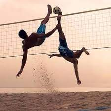

El futvóley, futvóle, piquivóley, pikivóley es un deporte fusión del voleibol y el fútbol que se juega principalmente en campos situados sobre la arena de la playa, aunque también es practicado en superficies de hormigón o hierba, siempre simulando un campo de voleibol. Goza de gran popularidad en países como Paraguay, 1 Brasil, España y Uruguay. Tras haber surgido en la playa de Copacabana, Río de Janeiro y también en las zonas deportivas de Pallejà, el futvoley se ha popularizado rápidamente y actualmente existe un gran número de seguidores de este deporte por todo el mundo. Resultado de la adaptación del fútbol al vóley playa, el futvoley encuentra en la ciudad de Río de Janeiro su principal centro de expresión.

El introductor del deporte fue el exjugador Octavio de Morales, “Tatá”, del C.R. Botafogo y de la selección brasileña de fútbol . En 1965, en la calle Bolívar en Copacabana, con el fin de burlar la prohibición de la policía para jugar el fútbol en la playa, Tatá decide jugar en una pista de voleibol con redes y campo delimitado, lo que sí era permitido. Existen varias federaciones y asociaciones de este deporte como la "Confederação Brasileira de Futevôlei" (CBDF) o la Asociación Española de Futvoley, que promueven la expansión de este juego, dotándolo de reglas únicas para la regulación del mismo. Estas normas son similares a las del vóley-playa, salvo la excepción de que no está permitido golpear el balón con la mano o el resto del brazo. Lo habitual es que los equipos estén formados por dos jugadores, aunque también puede jugarse uno contra uno, pudiendo en este caso golpear cada jugador hasta tres veces el balón para pasarla al campo rival. En España, no fue hasta principios de los años 90 cuando empezó a practicarse y a darse a conocer este deporte. Actualmente existen torneos amateurs en diversas localidades de la Comunidad Valenciana, Cataluña y Región de Murcia en los cuales van invitados jugadores de Brasil, Alemania, Inglaterra o Francia, entre otros.
Sistema de juego Los puntos se contabilizan como en voleibol, sin haber recuperación de saque, es decir se juegan 2 o 3 sets, siendo ganado cada uno por el primero que llega a 18 puntos y tiene una ventaja de, al menos, 2 puntos sobre el rival, llegando a un máximo de 21. Cada equipo dispone de 2 jugadores, aunque hay versiones en la que juegan 4. Historia La asociación pionera a nivel europeo, la Asociación Española de Futvoley, fue constituida en 1993 y desde entonces desarrolla tareas de organización y promoción a nivel estatal. En 2017 se cumplieron 25 años del torneo decano del territorio europeo, el Circuito Futvoley España. Año tras año el mejor futvoley se concentra en las distintas playas de la Comunidad Valenciana y Murcia. En playas de Valencia, concretamente en la de las Arenas, la Asociación Española de Futvoley organizó en 2005 el primer campeonato del mundo de futvoley, siendo el primer campeón de la historia Brasil. Participaron las selecciones de España, Brasil, Uruguay, Alemania, Argentina, Inglaterra, Italia y Francia. En la misma localización y durante los siguientes tres años, Brasil revalidó cita tras cita el título de campeón del mundo de futvoley.2 No fue hasta 2011, en playas de Brasil, cuando la anftriona perdería su condición de campeona del mundo a manos de la selección de Paraguay. Participaron 8 equipos en dicho campeonato: Brasil (1 y 2), Italia, Portugal, Argentina, Francia, Paraguay y España.3 Existen distintas asociaciones a lo largo del territorio español que también fomentan y promocionan este deporte. La Asociación Andaluza de Futvoley playa se constituye en 1996, y desde entonces desarrolla torneos en las costas andaluzas, curiosamente esta asociación surge de una ciudad no costera como Sevilla, siendo su mayor precursor Gabriel Isaac Reyes Cárdenas, joven investigador altamente creativo y profesional del mundo del fútbol en distintas áreas de trabajo. Durante más de 16 años ha promocionado y fomentado este deporte, y muchas disciplinas deportivas convencionales que fueron adaptándolas a las particularidades y singularidades de la playa. La Asociación Catalana de Futvóley (Associació Catalana de Futvòlei) obtuvo reconocimiento internacional como miembro de la Federación Internacional de Futvóley en septiembre de 2009.